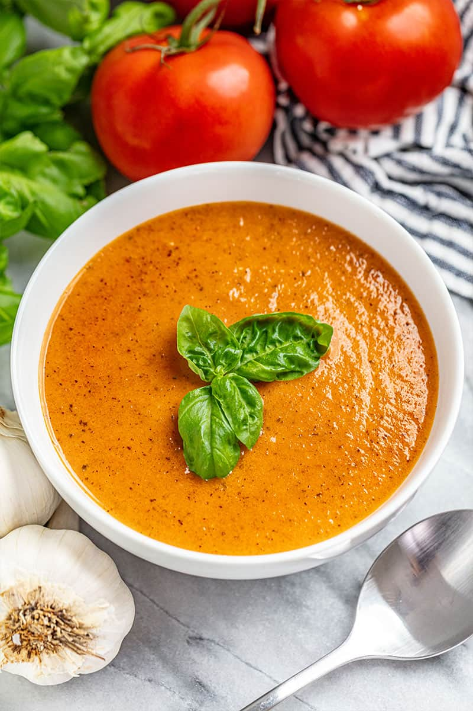

Simple Tomato Basil Soup
A comforting, rustic soup that transforms basic ingredients into a flavorful bowl of warmth. The natural sweetness of tomatoes blends with aromatic basil for a classic combination that's both nourishing and elegant in its simplicity.

Ingredients:
- 2 tablespoons olive oil
- 1 large onion, chopped
- 3 cloves garlic, minced
- 2 carrots, diced
- 2 cans (28 oz each) whole peeled tomatoes
- 4 cups vegetable broth
- ¼ cup fresh basil leaves, plus more for garnish
- 1 teaspoon dried oregano
- 1 teaspoon sugar
- Salt and pepper to taste
- ½ cup heavy cream (optional)
Instructions:
- Heat oil in a large pot over medium heat
- Add onion, garlic, and carrots; cook until softened, about 5 minutes
- Add tomatoes with juice, breaking them up with a spoon
- Pour in broth, basil, oregano, sugar, salt, and pepper
- Bring to a boil, then reduce heat and simmer for 20 minutes
- Use an immersion blender to puree soup to desired consistency
- Stir in cream if using, heat through without boiling
- Serve garnished with additional fresh basil
Home